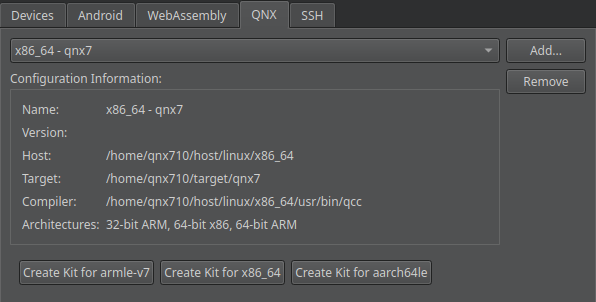

Create kits for QNX Neutrino devices
To generate a build and run kit for QNX Neutrino devices:
- Go to Preferences > Devices > Devices.
- Select Add > QNX Device > Start Wizard to add a QNX Neutrino device.
- Select Apply to fetch the information needed for creating kits.
- Go to Preferences > SDKs > QNX.
- Select Create Kit to create a kit for a particular platform.

- Activate the kit for your project.
See also How To: Develop for QNX and Activate kits for a project.